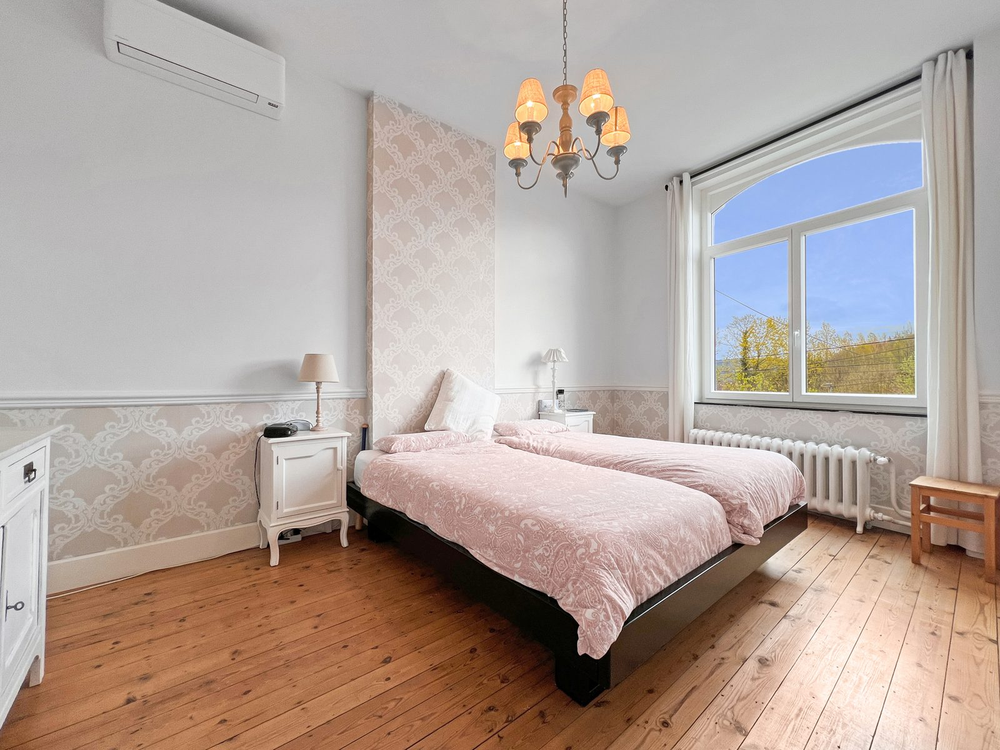
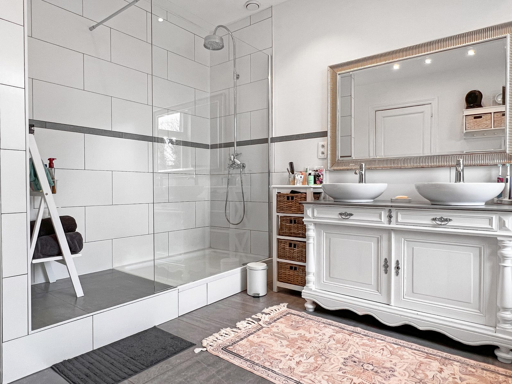
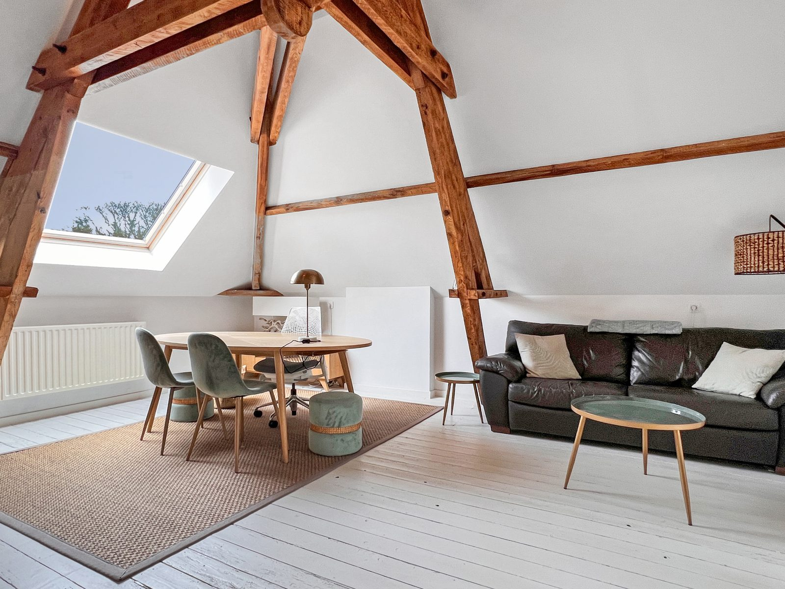
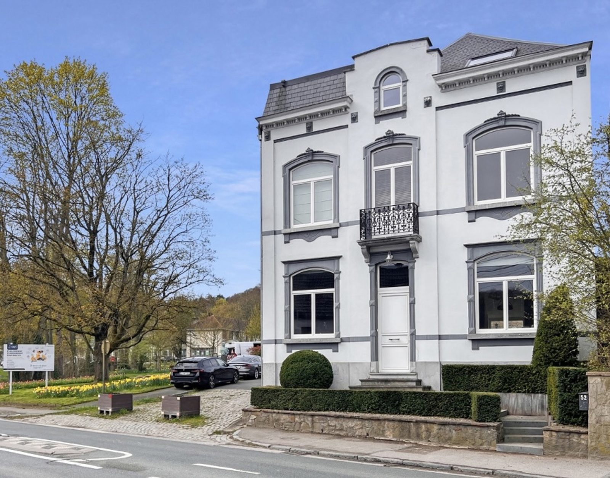
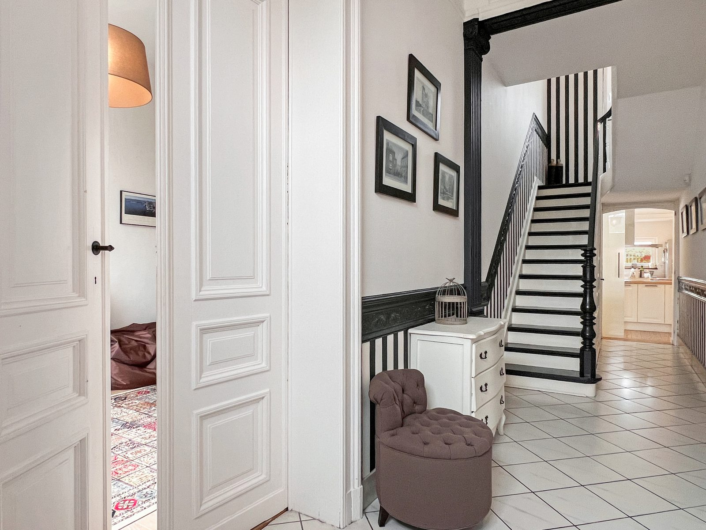
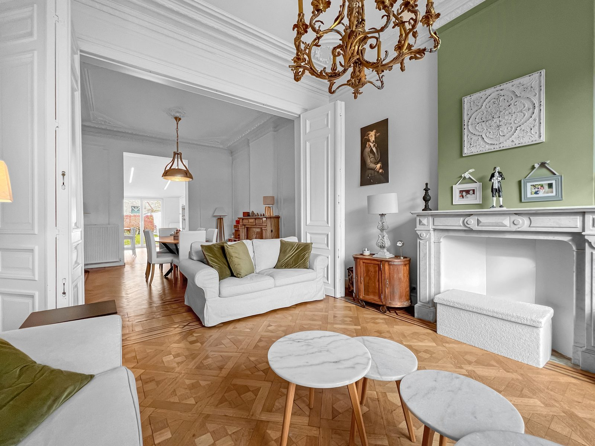
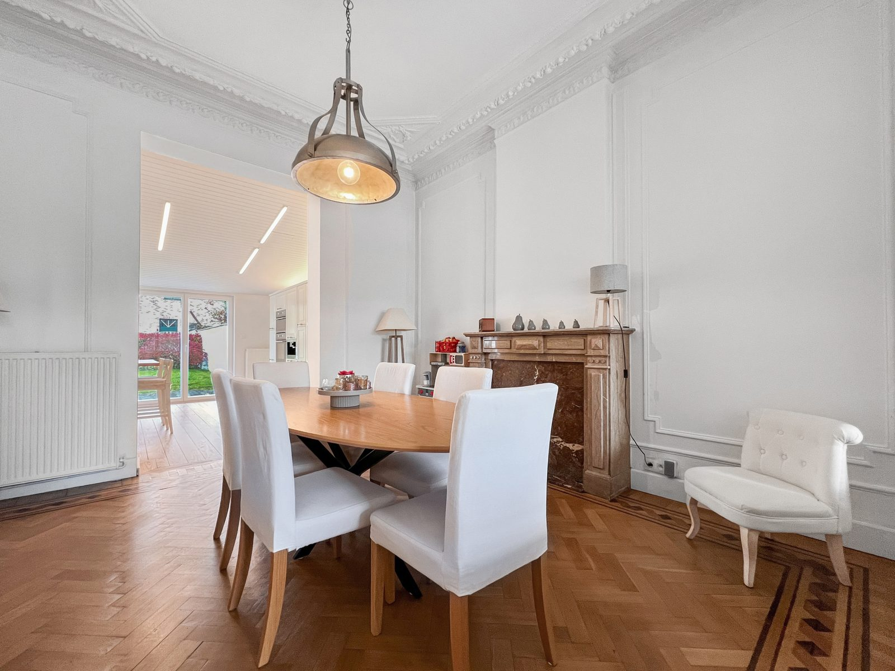
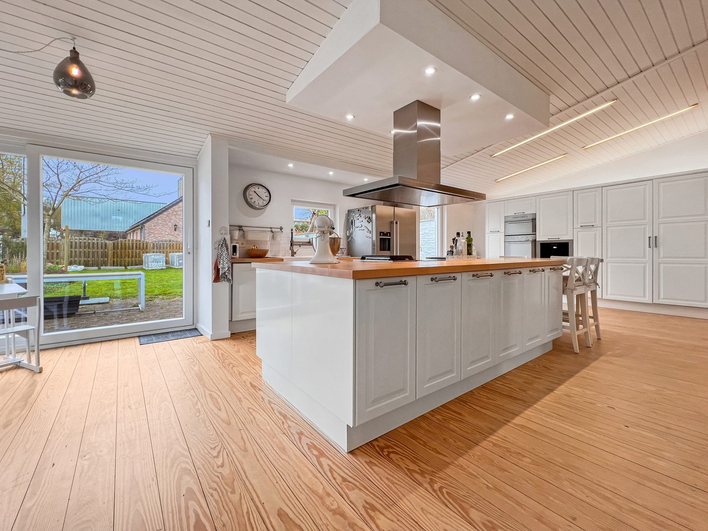
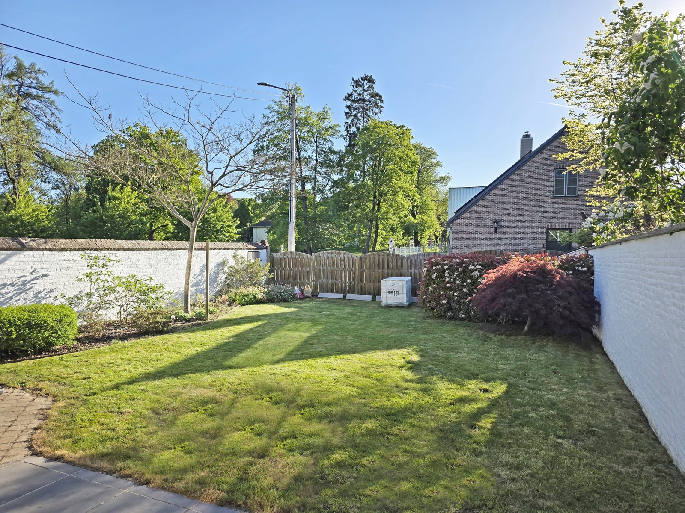

Zoom lent + parallaxe liée au scroll. Discret, fluide, aucun poids technique. Fais défiler doucement.



La façade, puis le zoom vers la porte d'entrée, et te voilà dans le hall, le salon, la salle à manger, la cuisine, le jardin. Défile lentement pour sentir le mouvement.






Rien de tout ceci n'est sur le vrai site : c'est une maquette pour juger l'effet. Les points de zoom, la vitesse et l'ordre des pièces se règlent librement.